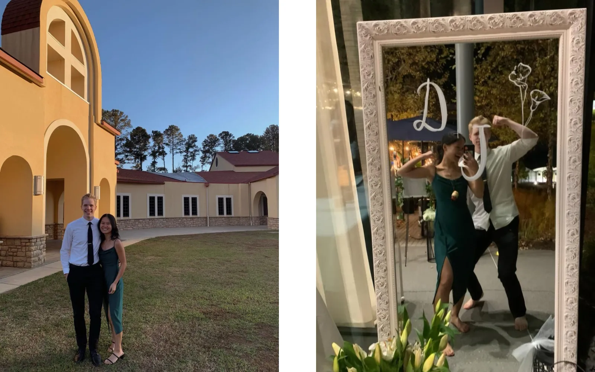
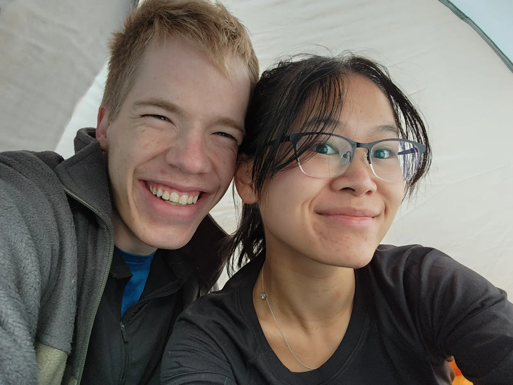
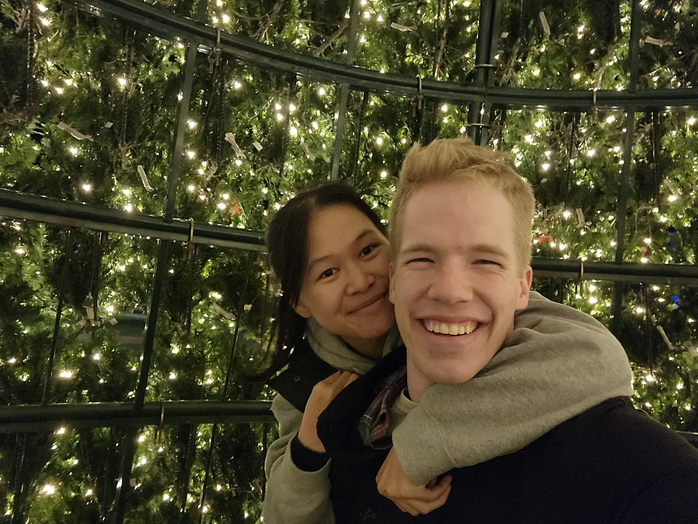
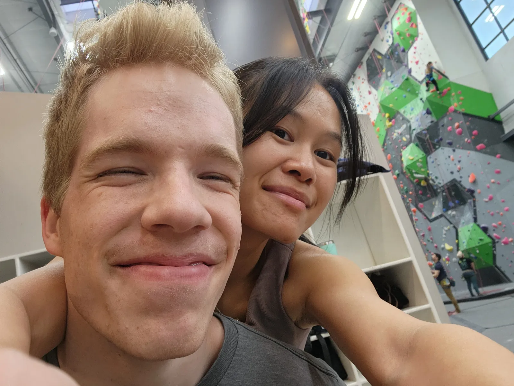
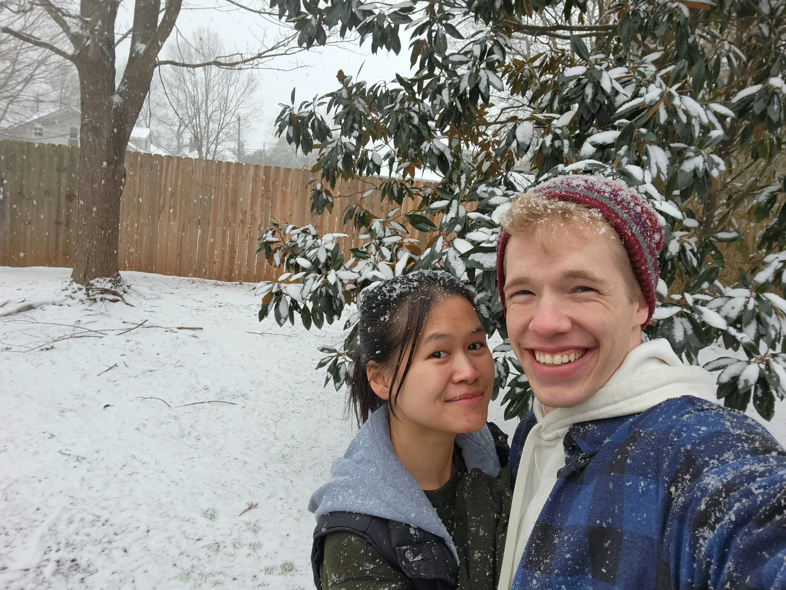
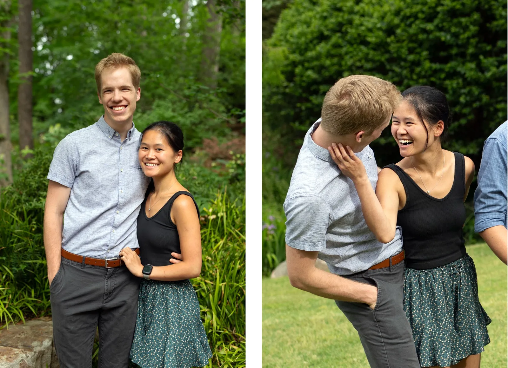
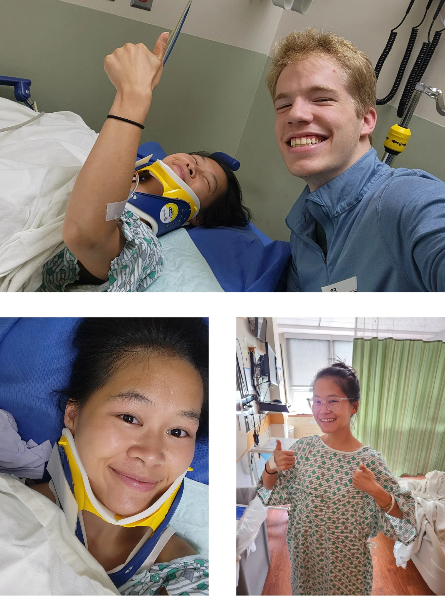
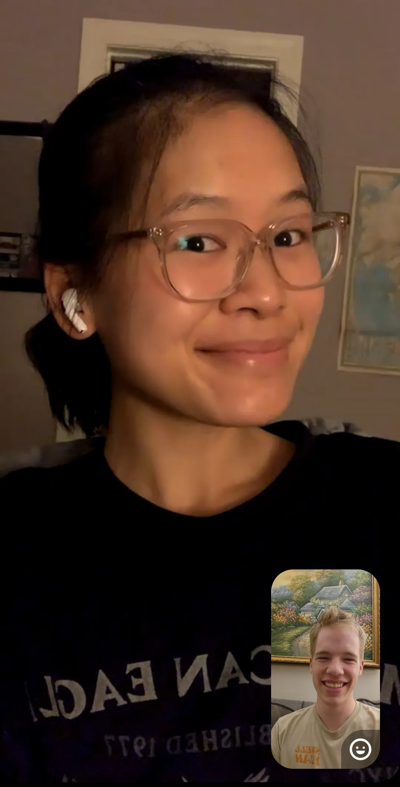

Timeline
First Wedding
The first wedding Laura and Daniel attended. In other words, the second date.
First Camping Trip
Scary warewolves haunted their dreams.
Attention
It was cold.
First Christmas
First Climb
Free Photoshoot
“Butterflies!”

Warning
Running barefoot on nearly frozen grass can be painful.
First Snowstorm
Bonus Photoshoot
Perks of having graduating sisters - free photos!
Broken Neck
Me oh my, how dreadfully grave this could have been. After several hours in the ER, Laura was told she would likely need to wear a neck brace for three months. After a painful night with only a couple hours of restless sleep, and a morning filled with hours more of traumatic waiting, Laura and Daniel were finally told that no brace would be necessary. But the tribulations did not cease there, for only 24 hours later, Laura (cushioned by pillows on all sides) drove the final few hours home while Daniel fell into a fever that reached 101.5 by nighttime. Throughout these trials, Daniel took care of Laura, and Laura took care of Daniel, and they made it through together.
Caution
Trees can be slippery.
Second Wedding

Danger
Never underestimate the invigorating power of the YMCA song.
Tip
Mossback Distillery has tasty drinks and a charming atmosphere, including a sweet old lady playing the piano (feel free to ask Laura all about her).
One Year Anniversary
As it turns out, Daniel and Laura have several options for dates that could mark the beginning of their relationship. If it piques your interest, take a seat, kick off your shoes, and relax with the tale of those first few magical days for Laura and Daniel. The relationship started as a slow burn - over the course of two months, the text conversations slowly grew into thoughtful essays and a couple convivial phone calls. Finally, the two met in person and nervously scoped each other out, sharing a walk around the park, a game of checkers, a night of cooking, and a conversation about past relationships and modes of memory storage. Some might consider this their “first date”, but both Laura and Daniel are more inclined to consider it more of a “first meeting”, and certainly not the start of the relationship. Over the course of the next month, the two met up each weekend, first for a wedding, then for a visit to Lynchburg, and finally for a friendsgiving celebration. They grew to know each other, and, unbeknownst to the other, like each other.
On the Saturday before Thanksgiving, they met for a fifth time, and at last the sparks caught aflame. By the light of the fire on Daniel’s back deck, wrapped in a blanket to protect from the freezing cold, they shared their first kiss. This date, November the 23rd (also Daniel’s dad’s birthday), could mark the beginning of Laura and Daniel, the pair. Technically, however, they did not confirm their mutual affection until the wee hours of the morning, making the 24th a potentially more accurate start date. But let us stay on track and continue with the story. Later that day (after church), Daniel drove to Burlington to meet Laura. Near the baseball fields at Springwood park, they finally shared their respective prespecitves on the previous several months, recounting their stories of how they fell for each other. Of course, they shared a few kisses as well, delighted with the knowledge of their reciprocated fondness. Before parting ways for the evening, they made a plan: due to tumultuous whirlwind of feelings and revelations dominating the previous 24 hours, Daniel would plan a proper first date for some time later in the week, and that would mark the official start of the relationship. One might think, “Aha! Right here, the start of the relationship, clearly defined in the moment!” But alas, there is more to the story.
{kind=link}
After three tortuous days of distracted thought and reflection, Daniel picked up Laura on Thanksgiving morning and went to breakfast at St. Joe’s. After Daniel mumbled confusedly when attempting to introduce Laura, the two conferred and decided to skip the equivocation and use “girlfriend” when introducing Laura. Accordingly, at the Phillips Thanksgiving feast a few hours later, Laura introduced Daniel as her boyfriend. In 2025, Thanksgiving fell on the 28th, making this date another reasonable relationship start date. But one more day must still be considered: on November 30th, two days later, Laura and Daniel shared a wonderful afternoon and evening together, starting with some time exploring Hillsborough and impersonating an elopement, followed by tasty sushi in Chapel Hill, and ending with Hadestown at DPAC. This day more than fulfilled the commitment made earlier in the week to officially kick off the relationship with a proper first date.
Well, hopefully now you can see the predicament that Laura and Daniel face: when did the relationship oficially start? The evening when feelings were first shared? The early morning of the first kiss? The first introduction as girlfriend and boyfriend? The first proper date? Laura and Daniel have considered this carefully, and in the spirit of defining relationships as a compact not only understood by the two participants but also declared to family and friends, they have chosen November 28th, the day Daniel introduced Laura to his church family as his girlfriend, and the day Larua introduced Daniel to her dad as her boyfriend. Accordingly, on November 28th, 2025, Laura and Daniel celebrated their one-year anniversary! Woefully, though, they celebrated separately, each with their respective families for Thanksgiving. The separation hurt them both deeply, and they hope to always celebrate together in the years to come.
Important
This account has been read and approved by Wauwa :)